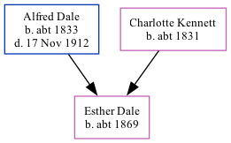

Esther Dale c1869 -
[ Home ] | [ Calendar ] | [ Surnames Index ] | [ Family History ]The child of Alfred Dale (an agricultural laborer) and Charlotte Kennett, Esther Dale, the first cousin three-times-removed on the father's side of Nigel Horne, was born in Canterbury, Kent, England c. 1869.
Throughout her life, she lived in Marshside, Kent, England on Apr 2, 18711; and on London Road, Harbledown, Kent on Apr 3, 18812.
Parents
- Alfred was born c. 1833
- Charlotte was born c. 1831
Citations
- 1871 England, Wales & Scotland Census - Findmypast (was age 2 and the daughter of the head of the household)
- 1881 England, Wales & Scotland Census - Findmypast (was age 12 and the daughter of the head of the household)
Media
1871 England, Wales & Scotland Census - GBC/1871/0014197849
Family Tree
Generated by Ged2Site. Last updated on Jul 20, 2025